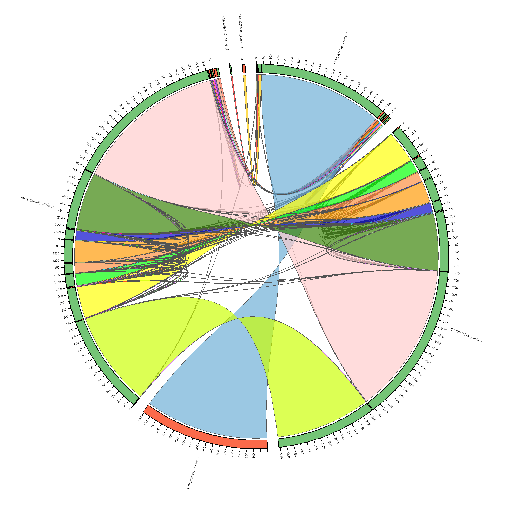

Введение и постановка задачи
Классический геном Vibrio cholerae организован в виде двух кольцевых репликонов: большой хромосомы (Chr I, ~3 Мб), несущей основные гены «домашнего хозяйства» и метаболизма, и малой хромосомы (Chr II, ~1 Мб), обогащённой мобильными элементами и генами горизонтального переноса. Наряду с классической плазмидной гипотезой происхождения Chr II рассматривается модель динамической реорганизации и разделения/слияния единого предкового нуклеоида.
В работе проведена сборка de novo, аннотация и сравнительный
анализ двух наборов длинных чтений Oxford Nanopore из директории
/home/prep01/data/hw/: SRR29316716 (472
МБ, N50 чтений 13 731 п.н.) и SRR32556689 (882 МБ,
N50 чтений 5 054 п.н.).
1. Длины хромосом, генный состав и кластеры rRNA
Сборка и распределение генов по контигам
Сборка выполнена в Flye v2.9.5, функциональная и структурная аннотация — в Prokka v1.15.6 (с использованием Prodigal, Barrnap и ARAGORN). У обоих штаммов также аннотирована 1 молекула tmRNA.
| Штамм | Контиг (репликон) | Длина, п.н. | Покрытие | Кольцевой | CDS | tRNA | rRNA |
|---|---|---|---|---|---|---|---|
| SRR29316716 | SRR29316716_contig_2 Chr I | 3 058 918 | 61× | Да (Y) | 2 663 | 97 | 28 |
| SRR29316716_contig_1 Chr II | 1 077 208 | 56× | Да (Y) | 991 | 4 | 0 | |
| Итого SRR29316716 | 4 136 126 | 59× | 2 контига | 3 654 | 101 | 28 | |
| SRR32556689 | SRR32556689_contig_2 Chr I + фрагмент Chr II | 3 143 111 | 117× | Нет (N) | 2 776 | 97 | 28 |
| SRR32556689_contig_1 Chr II (осн.) | 959 736 | 113× | Нет (N) | 835 | 4 | 0 | |
| SRR32556689_contig_4 фрагм. Chr II | 19 755 | 34× | Нет (N) | 30 | 0 | 0 | |
| SRR32556689_contig_3 фрагм. Chr II | 10 033 | 54× | Нет (N) | 11 | 0 | 0 | |
| Итого SRR32556689 | 4 132 635 | 115× | 4 контига | 3 652 | 101 | 28 |
contig_3 и
contig_4, а оставшаяся часть перенесена на Chr I.
Незамкнутость контигов у SRR32556689 объясняется более короткими
чтениями (N50 = 5,05 кб против 13,73 кб у SRR29316716), не
перекрывающими длинные повторы в точках стыка.
Расположение кластеров генов рибосомной РНК (rRNA)
В обоих геномах обнаружено ровно
9 полных оперонов рРНК (16S–23S–5S; первый оперон
содержит дополнительную копию 5S рРНК, всего
28 генов rRNA).
Все 9 кластеров расположены исключительно на большой хромосоме
(contig_2); на малой хромосоме гены рРНК полностью отсутствуют. Первые 4
кластера ориентированы по цепи -, следующие 5 — по цепи
+, что соответствует двунаправленной репликации от точки
oriC
(между кластерами №4 и №5).
| Оперон | Состав | Цепь | Координаты в SRR29316716 (contig_2) | Координаты в SRR32556689 (contig_2) | Сдвиг, п.н. |
|---|---|---|---|---|---|
| Кластер 1 | 16S–23S–5S–5S | - | 3 058 640..3 058 755 и 7..5 190 (стык кольца) | 742 045..747 510 | +742 320 |
| Кластер 2 | 16S–23S–5S | - | 251 665..257 051 | 993 985..999 371 | +742 320 |
| Кластер 3 | 16S–23S–5S | - | 257 411..262 516 | 999 731..1 004 836 | +742 320 |
| Кластер 4 | 16S–23S–5S | - | 354 653..359 753 | 1 096 973..1 102 073 | +742 320 |
| Кластер 5 | 16S–23S–5S | + | 435 711..441 072 | 1 178 029..1 183 390 | +742 318 |
| Кластер 6 | 16S–23S–5S | + | 609 561..614 745 | 1 351 879..1 357 063 | +742 318 |
| Кластер 7 | 16S–23S–5S | + | 687 166..692 350 | 1 429 483..1 434 667 | +742 317 |
| Кластер 8 | 16S–23S–5S | + | 692 710..698 070 | 1 435 027..1 440 387 | +742 317 |
| Кластер 9 | 16S–23S–5S | + | 1 141 190..1 146 295 | 1 883 509..1 888 614 | +742 319 |
2. Синтенная карта геномов и анализ перестроек
Поиск синтенных блоков (минимальная длина блока 5 000 п.н., режим
-s loose) выполнен с помощью Sibelia,
визуализация — в Circos v0.69-8. Для количественной
верификации блоков и ориентаций проведено полногеномное выравнивание
minimap2 (-x asm5).

Расшифровка подписей идеограмм на карте Circos (из circos.sequences.txt)
-
seq1— SRR29316716_contig_1 (Chr II, 1 077 208 п.н.) -
seq2— SRR29316716_contig_2 (Chr I, 3 058 918 п.н.) -
seq3— SRR32556689_contig_1 (Chr II основная часть, 959 736 п.н.) -
seq4— SRR32556689_contig_2 (Chr I + транслоцированный участок Chr II, 3 143 111 п.н.) -
seq5— SRR32556689_contig_3 (фрагмент Chr II, 10 033 п.н.) -
seq6— SRR32556689_contig_4 (фрагмент Chr II, 19 755 п.н.)
Синтенные блоки по данным полногеномного выравнивания (minimap2)
| Query (SRR32556689) | Координаты Query | Цепь | Target (SRR29316716) | Координаты Target | Длина, п.н. | Интерпретация |
|---|---|---|---|---|---|---|
| SRR32556689_contig_2 | 0..742 323 | + | SRR29316716_contig_2 | 2 316 595..3 058 918 | 742 325 | Коллинеарный блок Chr I (сдвиг начала кольца) |
| SRR32556689_contig_2 | 742 320..3 068 961 | + | SRR29316716_contig_2 | 0..2 326 640 | 2 326 645 | Коллинеарный блок Chr I (перекрытие ~10 кб) |
| SRR32556689_contig_2 | 3 064 269..3 143 111 | - | SRR29316716_contig_1 | 998 367..1 077 208 | 78 842 | Межхромосомная транслокация |
| SRR32556689_contig_1 | 0..959 736 | - | SRR29316716_contig_1 | 38 632..998 366 | 959 736 | Основной блок Chr II (обратная ориентация сборки) |
| SRR32556689_contig_4 | 0..19 755 | - | SRR29316716_contig_1 | 17 681..37 436 | 19 755 | Фрагмент Chr II |
| SRR32556689_contig_3 | 0..10 027 | + | SRR29316716_contig_1 | 7 393..17 420 | 10 027 | Фрагмент Chr II |
Описание крупных перестроек
-
Крупная межхромосомная транслокация (78,8 кб):
терминальный участок большой хромосомы
SRR32556689_contig_2(координаты3 064 269..3 143 111) выравнивается в обратной ориентации (-) на малую хромосомуSRR29316716_contig_1(998 367..1 077 208). На карте Circos эта перестройка видна как чёткая лента, соединяющая большую хромосомуseq4с малой хромосомойseq1. В области стыка (~3,06–3,09 Мб наSRR32556689_contig_2) Prokka аннотирует копии транспозазы семейства IS3 (ISVch4), что указывает на вероятный механизм гомологичной рекомбинации по мобильным элементам. -
Кольцевая перестановка (артефакт линейного представления кольца,
не перестройка):
основная часть Chr I (
seq2иseq4) сохраняет полную коллинеарность порядка генов, но точка линеаризации кольцевой хромосомы сдвинута на 742 320 п.н. (на карте Circos это проявляется двумя перекрещивающимися широкими лентами междуseq2иseq4). -
Фрагментация Chr II у SRR32556689: оставшаяся часть
малой хромосомы
SRR29316716_contig_1(0..998 366 п.н.) представлена тремя неперекрывающимися контигами (contig_1— 959,7 кб,contig_4— 19,8 кб иcontig_3— 10,0 кб). Невыровненные интервалы (~7,4 кб в начале и короткие разрывы ~0,26 кб и ~1,2 кб) соответствуют повторяющимся участкам, где длины ридов SRR32556689 оказалось недостаточно для замыкания кольца.
Как точнее определить координаты точек разрыва (breakpoints)?
Для прецизионной локализации границ перестроек (с точностью до нуклеотида) следует:
-
Проанализировать файл
blocks_coords.txt(вывод Sibelia) или детальное выравниваниеminimap2 -x asm5 --cs/nucmer+show-coords, найдя точные границы соседних блоков, в которых меняется целевая хромосома или цепь (в нашем случае это зона перекрытия3 064 269..3 068 961наSRR32556689_contig_2). -
Картировать исходные длинные чтения ONT (
minimap2 -ax map-ont) обоих штаммов на обе сборки и проверить в браузере генома (IGV) наличие «сквозных» чтений (spanning reads), непрерывно перекрывающих химерный стык Chr I / Chr II — это одновременно подтверждает реальность перестройки (отличая её от химеры сборки) и даёт точные координаты границ. - Извлечь ±10 кб вокруг точки стыка и сопоставить с GFF-аннотацией и локальным BLAST/dot-plot для идентификации повторов, IS-элементов, профагов или оперонов рРНК, опосредовавших рекомбинацию.
3. Локализация генов холератоксина (Ctx)
Поиск субъединиц холератоксина A (ctxA.pep.fa,
WP_001881225.1), B (ctxB.pep.fa,
WP_000593522.1) и дополнительно белка
TcpS (TcpS.pep.fa,
WP_001022338.1) из
/home/prep01/data/db/prot/ выполнен методом
tblastn (поиск белковых последовательностей по
нуклеотидным сборкам в 6 рамках считывания, порог
E-value < 1e-5).
| Штамм | Белок (RefSeq ID) | Хромосома | Координаты (старт..конец) | Цепь | Идентичность | Покрытие (aa) | E-value | Bitscore |
|---|---|---|---|---|---|---|---|---|
| SRR29316716 | CtxA (WP_001881225.1) | SRR29316716_contig_2 (Chr I) | 1 941 106..1 940 333 | - | 100,00% | 258 / 258 | 3.53e-167 | 509 |
| CtxB (WP_000593522.1) | SRR29316716_contig_2 (Chr I) | 1 940 333..1 939 962 | - | 98,39% | 124 / 124 | 2.39e-81 | 256 | |
| TcpS (WP_001022338.1) | SRR29316716_contig_2 (Chr I) | 1 271 468..1 271 872 | + | 100,00% | 135 / 152 | 1.89e-72 | 233 | |
| SRR32556689 | CtxA (WP_001881225.1) | SRR32556689_contig_2 (Chr I) | 2 683 428..2 682 655 | - | 100,00% | 258 / 258 | 3.53e-167 | 509 |
| CtxB (WP_000593522.1) | SRR32556689_contig_2 (Chr I) | 2 682 655..2 682 284 | - | 98,39% | 124 / 124 | 2.39e-81 | 256 | |
| TcpS (WP_001022338.1) | SRR32556689_contig_2 (Chr I) | 2 013 788..2 014 192 | + | 100,00% | 135 / 152 | 1.89e-72 | 233 |
ctxA и ctxB расположены в виде единого
тандемного оперона ctxAB (в составе профага CTXφ) на
обратной цепи (-)
большой хромосомы (Chr I, contig_2).
Разница координат между штаммами составляет ровно
+742 322 п.н. (для TcpS — +742 320
п.н.), что полностью совпадает с кольцевым сдвигом начала сборки Chr
I. Таким образом, локус профага CTXφ не затронут перестройками, а
аминокислотные последовательности обеих субъединиц у штаммов
идентичны.
4. Оценка вариаций между геномами (SNP и Indels)
Поиск малых вариаций выполнен путём выравнивания сборки
SRR32556689 на референсную замкнутую сборку
SRR29316716 через
minimap2 -cx asm5 --cs с последующим вызовом вариантов в
paftools.js call. Однозначным выравниванием (1-к-1)
покрыто 4 087 448 п.н. (98,82% длины генома
SRR29316716).
| Репликон (референс SRR29316716) | Длина, Мб | SNP | Плотность SNP (на 1 Мб) | Indels (все 1 п.н.) | Всего вариантов |
|---|---|---|---|---|---|
| SRR29316716_contig_2 Chr I | 3,059 | 13 | 4,25 | 13 | 26 |
| SRR29316716_contig_1 Chr II | 1,077 | 12 | 11,14 | 3 | 15 |
| Итого по геному | 4,136 | 25 (ts/tv = 5,25) | 6,04 | 16 (10 ins / 6 del) | 41 |
- Природа indels: все 16 найденных инделов имеют длину строго 1 п.н. (10 вставок и 6 делеций; инделов длиной 2 п.н. и более не обнаружено — 0). В сборках, полученных исключительно по чтениям Oxford Nanopore без полировки короткими чтениями Illumina, единичные 1-п.н. инделы преимущественно представляют собой остаточные ошибки в гомополимерных трактах.
-
Скорость эволюции хромосом: даже при крайне
близком родстве штаммов (всего 25 SNP, отношение транзиций к
трансверсиям
ts/tv = 5,25) удельная плотность точечных замен на малой хромосоме Chr II (~11,1 SNP/Мб) в 2,6 раза выше, чем на консервативной Chr I (~4,3 SNP/Мб).
Общие выводы
Проведённый анализ двух близкородственных штаммов Vibrio cholerae (SRR29316716 и SRR32556689, расходящихся всего на 25 SNP по всему 4,13-мегабазному геному) наглядно иллюстрирует макроэволюционную пластичность двуххромосомного генома:
-
Несмотря на сохранение классической функциональной асимметрии (все 9
кластеров rRNA, 97 из 101 tRNA и оперон холератоксина
ctxABзакреплены на большой хромосоме Chr I), граница между репликонами не является жёстко фиксированной. - Даже на коротких эволюционных дистанциях между практически клональными штаммами происходят крупные межхромосомные обмены и слияния сегментов (78,8 кб), по-видимому опосредованные повторяющимися IS-элементами (в частности IS3 / ISVch4), что согласуется с представлениями о динамическом формировании и реорганизации двух хромосом V. cholerae.
Протокол выполнения (команды на сервере biocalc)
Все этапы выполнены в активной среде
conda activate assembly на сервере
biocalc (16 ядер CPU, рабочая директория
~/vibrio_project).
mkdir -p ~/vibrio_project/{reads,assembly,annotation,synteny,ctx_blast,variants,report}
cd ~/vibrio_project
ln -s /home/prep01/data/hw/SRR29316716.fastq reads/
ln -s /home/prep01/data/hw/SRR32556689.fastq reads/
conda activate assemblyflye --nano-raw reads/SRR29316716.fastq --out-dir assembly/SRR29316716
flye --nano-raw reads/SRR32556689.fastq --out-dir assembly/SRR32556689
cat assembly/SRR29316716/assembly_info.txt
cat assembly/SRR32556689/assembly_info.txt
sed 's/^>/>SRR29316716_/' assembly/SRR29316716/assembly.fasta > synteny/SRR29316716.fasta
sed 's/^>/>SRR32556689_/' assembly/SRR32556689/assembly.fasta > synteny/SRR32556689.fastaprokka --outdir annotation/SRR29316716 --prefix SRR29316716 --cpus 8 \
--kingdom Bacteria --genus Vibrio --species cholerae \
synteny/SRR29316716.fasta
prokka --outdir annotation/SRR32556689 --prefix SRR32556689 --cpus 8 \
--kingdom Bacteria --genus Vibrio --species cholerae \
synteny/SRR32556689.fasta
# Сводная статистика и число генов на каждый контиг
cat annotation/SRR29316716/SRR29316716.txt
cat annotation/SRR32556689/SRR32556689.txt
awk -F'\t' '/^##FASTA/{exit} !/^#/ && ($3=="CDS"||$3=="tRNA"||$3=="rRNA"){c[$1,$3]++; k[$1]=1}
END{for(i in k) printf "%-22s CDS=%-5d tRNA=%-4d rRNA=%-4d\n", i, c[i,"CDS"]+0, c[i,"tRNA"]+0, c[i,"rRNA"]+0}' \
annotation/SRR29316716/SRR29316716.gff | sort
awk -F'\t' '/^##FASTA/{exit} !/^#/ && ($3=="CDS"||$3=="tRNA"||$3=="rRNA"){c[$1,$3]++; k[$1]=1}
END{for(i in k) printf "%-22s CDS=%-5d tRNA=%-4d rRNA=%-4d\n", i, c[i,"CDS"]+0, c[i,"tRNA"]+0, c[i,"rRNA"]+0}' \
annotation/SRR32556689/SRR32556689.gff | sort
# Координаты генов rRNA
awk -F'\t' '/^##FASTA/{exit} $3=="rRNA"{p=$9; sub(/.*product=/,"",p); sub(/;.*/,"",p);
printf "%-22s %10d %10d %2s %s\n", $1, $4, $5, $7, p}' annotation/SRR29316716/SRR29316716.gff
awk -F'\t' '/^##FASTA/{exit} $3=="rRNA"{p=$9; sub(/.*product=/,"",p); sub(/;.*/,"",p);
printf "%-22s %10d %10d %2s %s\n", $1, $4, $5, $7, p}' annotation/SRR32556689/SRR32556689.gffSibelia -s loose -m 5000 -o synteny/sibelia_out \
synteny/SRR29316716.fasta synteny/SRR32556689.fasta
cd synteny/sibelia_out/circos
circos -conf circos.conf
cd ~/vibrio_project
cat synteny/sibelia_out/circos/circos.sequences.txt
minimap2 -x asm5 -c synteny/SRR29316716.fasta synteny/SRR32556689.fasta > synteny/comparison.paf
awk '$11 > 1000 {printf "%-22s %10d %10d %s %-22s %10d %10d len=%d\n", $1, $3, $4, $5, $6, $8, $9, $11}' \
synteny/comparison.paf | sort -k5,5 -k6,6nmakeblastdb -in synteny/SRR29316716.fasta -dbtype nucl -out ctx_blast/SRR29316716_db
makeblastdb -in synteny/SRR32556689.fasta -dbtype nucl -out ctx_blast/SRR32556689_db
cat /home/prep01/data/db/prot/ctxA.pep.fa \
/home/prep01/data/db/prot/ctxB.pep.fa \
/home/prep01/data/db/prot/TcpS.pep.fa > ctx_blast/query.faa
tblastn -query ctx_blast/query.faa -db ctx_blast/SRR29316716_db \
-outfmt "6 qseqid sseqid pident length qlen sstart send evalue bitscore" \
-evalue 1e-5 > ctx_blast/SRR29316716_ctx.tsv
tblastn -query ctx_blast/query.faa -db ctx_blast/SRR32556689_db \
-outfmt "6 qseqid sseqid pident length qlen sstart send evalue bitscore" \
-evalue 1e-5 > ctx_blast/SRR32556689_ctx.tsv
column -t ctx_blast/SRR29316716_ctx.tsv
column -t ctx_blast/SRR32556689_ctx.tsvminimap2 -cx asm5 --cs synteny/SRR29316716.fasta synteny/SRR32556689.fasta \
| sort -k6,6 -k8,8n \
| paftools.js call -f synteny/SRR29316716.fasta - > variants/s1_vs_s2.vcf
awk '!/^#/ {
if (length($4)==1 && length($5)==1) snp++
else if (length($4) > length($5)) del++
else if (length($4) < length($5)) ins++
else mnp++
} END {
printf "SNPs: %d\nInsertions: %d\nDeletions: %d\nIndels all: %d\nTotal: %d\n",
snp+0, ins+0, del+0, ins+del+0, snp+ins+del+mnp+0
}' variants/s1_vs_s2.vcf